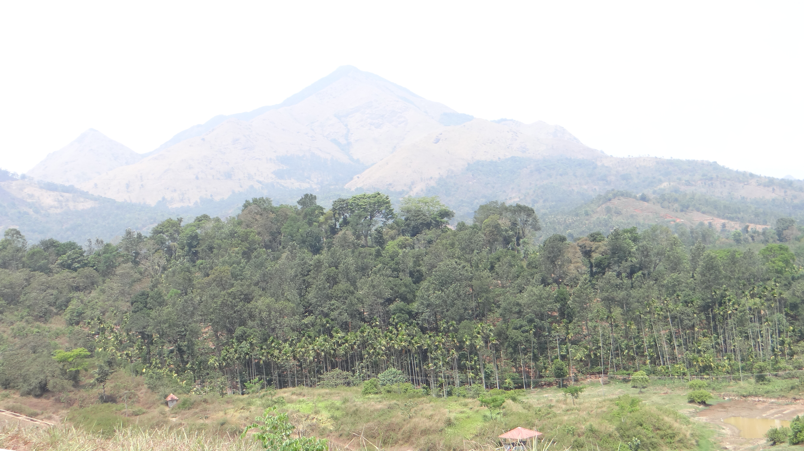
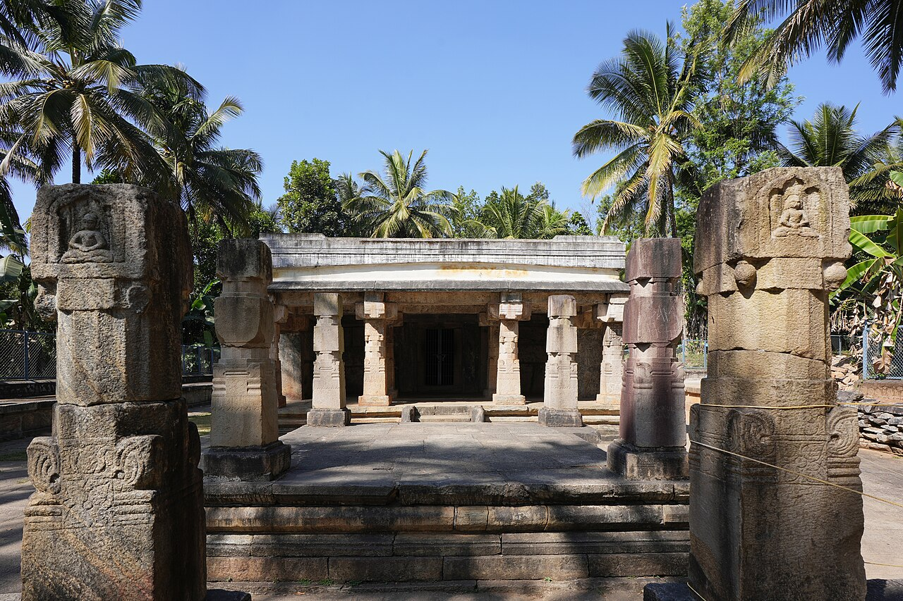
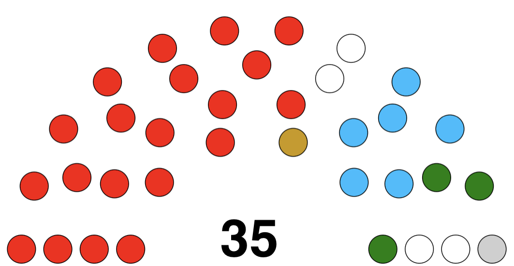
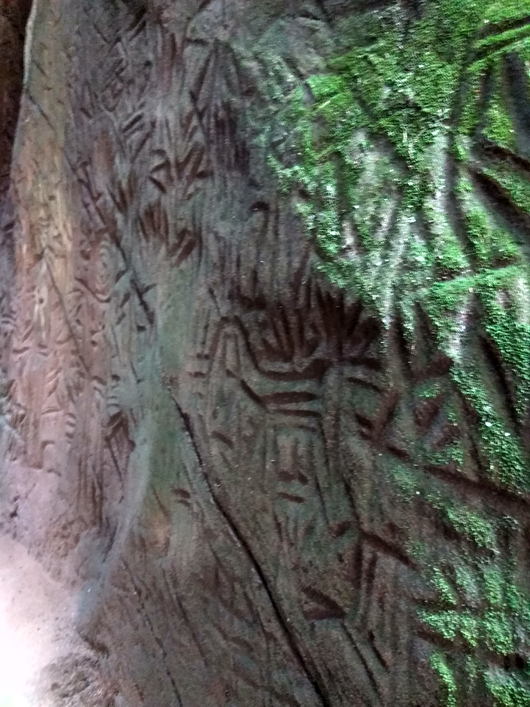

Empowering urban administration, environmental conservation, and citizen services through integrated Geographic Information Systems (GIS). Situated in the scenic Wayanad highlands at the tri-junction of Kerala, Karnataka, and Tamil Nadu.
Explore spatial layers, cadastre, municipal ward boundaries, road corridors, and environmental buffer zones exported from QGIS to the Web.
Nestled on the Southern Deccan Plateau transition zone, surrounded by the bio-rich Western Ghats and Nilgiri Biosphere Reserve.
Sulthan Bathery is situated upon the high-altitude Wayanad plateau, where the southern reaches of the Mysore Deccan tableland merge into the rugged ridges of the Western Ghats. The landscape features rolling verdant valleys, gentle hillocks, terraced agricultural plantations, and prominent granite monoliths like Ambukuthi Hills to the south.
The municipality borders the contiguous forest expanse of the Wayanad Wildlife Sanctuary, an essential component of the UNESCO-designated Nilgiri Biosphere Reserve. This unbroken wilderness connects seamlessly with Bandipur Tiger Reserve & Nagarhole National Park (Karnataka) and Mudumalai Tiger Reserve (Tamil Nadu), forming India’s largest contiguous elephant and tiger corridor.
Unlike most of Kerala where rivers cascade westward into the Arabian Sea, the natural drainage system of Sulthan Bathery feeds eastward into the tributaries of the Kabini River, a vital branch of the interstate Cauvery basin. The town's micro-watersheds nourish rich coffee, pepper, tea, cardamom, and paddy agro-ecosystems.
Bounded by Pulpally and Poothadi Grama Panchayats along highland agricultural corridors.
Protected forest border connecting to Bandipur (Karnataka) & Mudumalai (Tamil Nadu) via NH 766.
Bordered by Ambalavayal, Noolpuzha, and Nenmeni Panchayats leading to the Ambukuthi hills.
Bordered by Poothadi and Muttil Panchayats towards the district capital, Kalpetta.
A crossroads of prehistoric rock engravings, Vijayanagara stone architecture, Tipu Sultan’s artillery garrison, and anti-colonial resistance.

13th Century Vijayanagara Architecture • Artillery Depot of Tipu Sultan • Historic Monument
Located only 12 km south of Sulthan Bathery on the Ambukuthi Mala ridge, the famous Edakkal Caves feature petroglyphs and human-animal figures dating back to the Neolithic and Mesolithic periods, proving that the Bathery plateau was inhabited for thousands of years.
Originally named Ganapathivattam ("The Circle of Lord Ganesha") after an 8th-century temple at the crossroads, the town flourished as a pivotal commercial hub for Jain, Tamil, and Kannada merchants transporting spices, pepper, and timber between the Malabar coast and the Mysore empire. During the 13th century, exquisite granite Jain basadis were constructed.
During Tipu Sultan’s Malabar military campaigns against the British East India Company, his army stationed their battery (artillery and gunpowder depot) inside the thick stone walls of the 13th-century Jain Temple. Following the Fourth Anglo-Mysore War, British military surveyors recorded the town as Sultan's Battery, which evolved in Malayalam to Sulthan Bathery.
The dense jungle ridges surrounding Bathery served as strategic terrain for the "Lion of Kerala", Kerala Varma Pazhassi Raja, who marshaled indigenous Kurichiya and Kuruma tribal archers in a celebrated five-year guerrilla campaign against British colonial forces.
In 2015, the Government of Kerala upgraded Sulthan Bathery from a Grama Panchayat into a full-fledged Grade-III Municipality. In recent years, it has earned national acclaim as one of India's cleanest municipal towns under its pioneering zero-waste pedestrian street initiative.
Prominent civic, ecological, and heritage landmarks across the municipality.

Administrative headquarters in Chungam overseeing civic infrastructure, GIS land planning, and public works.
Critical Asian elephant and tiger corridor within the Nilgiri Biosphere Reserve connecting Bandipur and Mudumalai.

Neolithic rock engravings (c. 6000 BCE) located 12 km south of Sulthan Bathery town.
Granite stone pillared hall built in the 13th century, later used as an artillery storage depot by Tipu Sultan.
Comprehensive statistical indicators and administrative breakdown of Sulthan Bathery Municipality across all 36 delimited wards.